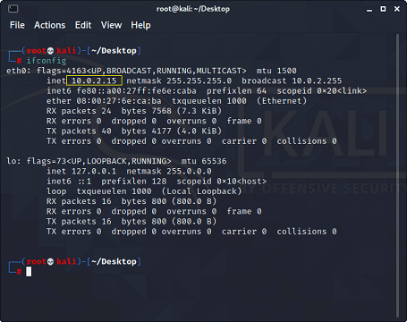

How to hack facebook account using kali linux
All most every new beginner in the hacking field usually wants to hack Facebook or Instagram. These can be considered as some of the most common priorities of every beginner in the hacking field. However, a question may be arising in your mind that, when we search on Google "hack facebook," a huge number of sites comes as a result, promising just enter the target's e-mail address and they will give you password. Thus it is nothing but just a method of making a fool; otherwise, Facebook had to shut down their business a long time ago. You may be wondering, then what does actually meaning of hacking Facebook. First of all, we have to accept that most of us are really misled by the term "hacking". Usually, all newcomers in the hacking field think that gaining the target's password or gaining access to the target's account is hacking, but hacking is much more than that. So before moving forward, we want to clear that you cannot hack Facebook, and it is almost impossible, at least for beginners.
When we try to hack any website (Facebook), we need to understand that it is not a cupcake. However hacking process usually consists of several time taking but essential processes such as working of the website, database management system, finding and understanding scripts used by the websites, and languages used to build that website. In the hacking process, almost every process is important, but the process of finding vulnerabilities or weaknesses in the system or website is most crucial.
However, the hacking process is not that easy but also not impossible. In this tutorial, we lean a common method (or trick) to hack a user's Facebook account using kali Linux. We are using Kali Linux as it is the number one operating system that is usually used for penetration testing. The success ratio of this method is quite good but not 100% because several other factors matter even when all things are ok at our end. So let's get started.
Requirements
- Kali Linux must be installed on your system. You can also install Kali Linux via Virtual Machine.
- SET Toolkit usually: it usually comes preinstalled in the full version of Kali Linux.
- You must have basic knowledge of how to use kali Linux.
In this tutorial, we will use the Phishing method, which is one of the most common and quite effective methods, but before implementing this method, let's see what it actually is.
Phishing method
Phishing is the most common method to get access to someone's Facebook account.
The most popular type of phishing is creating a fake login page and send the
link of the page by e-mail or SMS, or social media to the target.
Once the target opens that link, the login page will look exactly like the Facebook login page.
However, if the target thinks that is a genuine page and enters his/her credentials.
You will get those credentials instead of Facebook, and then you can easily access the target's account.
This process is a little bit difficult because we need to host a website and create a login page.
However, some excellent tools really made it kids play.
Table of contentsIn this tutorial,
we will be showing you how you can hack someone's Facebook
account with Kali Linux using social engineering toolkit.
What is Social Engineering Toolkit (SET)??
The Social-Engineer Toolkit (SET) is intended to perform very targeted against the human attack vector. The SET toolkit was developed by David Kennedy and his team. The attacks included within the toolbox are intended to be used for testing purposes. Even though we can hack Facebook with Kali Linux, it is illegal to do so without proper permission from the parties involved.
How to hack Facebook using Kali Linux?
To do so, you need to follow the following given instructions very carefully.
- Startup your Linux machine and log in as a root user.
- Now click on the top left corner, click on "all applications". Search for "settoolkit" and run the Toolkit as shown below:
- Once the social engineering toolkit opens, it will show the following option as shown below in the given image:
- Select the "Social Engineering Attacks" option by selecting the appropriate option, which in our case is "1". Once you select option 1, it will now display some other option to select where you need to select the "Website Attack Vectors" option.
- Now you have to select the option "Credential Harvester Attack Method" as shown below:
- Now select the "Credential Harvester Attack Method", which is "Site Clone" that we are going to use:
- After selecting the "Credential Harvester Attack Method", it will ask you to enter your IP address. As you can see below, our IP address is already mentioned, but that will be fine if you want to mention it. After which, you have to provide the URL address of the website you want to clone, which is Facebook in our case. If you don't know your IP address, you can learn it further in the tutorial.
- After providing the appropriate URL address, it will show you a similar interface as shown below:
- Here all work is almost done. Still, it will be nice to test it on your own system before using it on the actual target. To test whether it is working or not, open your web browser, enter your IP address in the search box, and press the enter button.
- Now enter your id and password and click on login as shown above. Your web page will reload and be redirected to the original login page of Facebook. However, to check it worked or not, you have to check the terminal to see whether some changes occur or not.
- As you can see in the above-given image, we have successfully got the id and password. To use it on the actual target, you have to shorten your IP address using some IP address shorten websites. After that, you can stick that IP address to a mail, pretending that it is from the Facebook or Google side.
How to know your IP address in Kali Linux?
If you don't know your IP address, you can consider the following instructions:
Open the terminal and execute the following given command:
Command
Output:
Conclusion:
Believe us or not, everyone can not do this, which means we have read several blogs and learned many things on hacking and Kali Linux, which is not enough for Hacking Facebook. So, the conclusion is that hacking Facebook is a really big deal, not everyone's cup of tea. Even elite-level hackers can't do it. But using the above-given method, you can try it.
Note:
Note: Using or accessing anyone's account without their permission is a type of cybercrime. So there is no need to remind that doing such types of activities, even for just fun, can put you in big trouble. This tutorial is only for educational purposes.